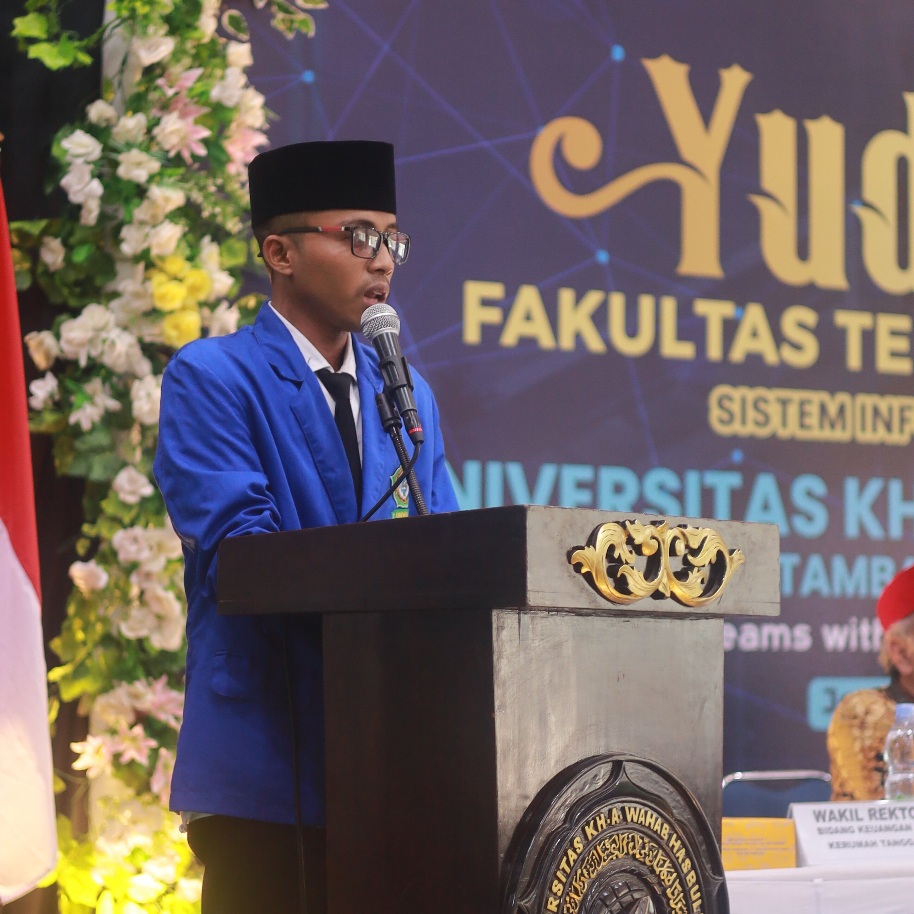
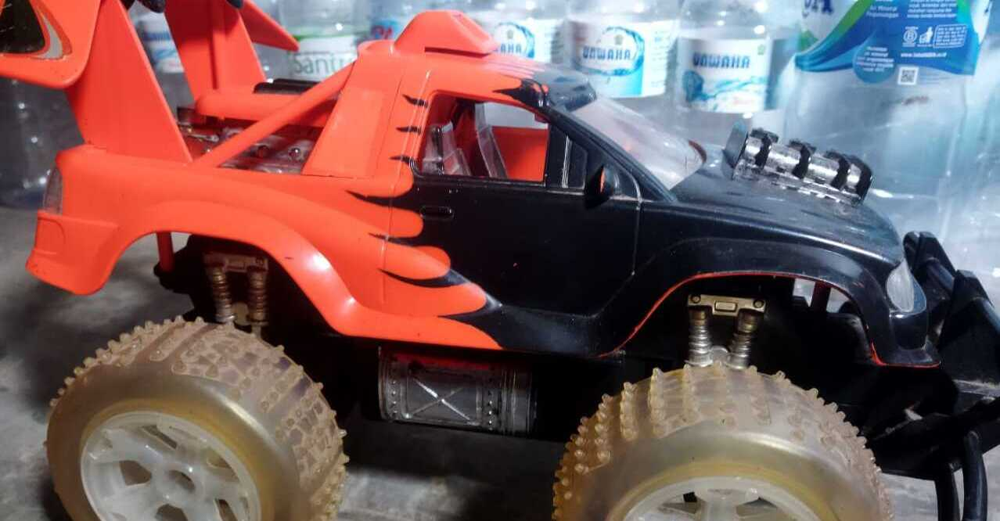
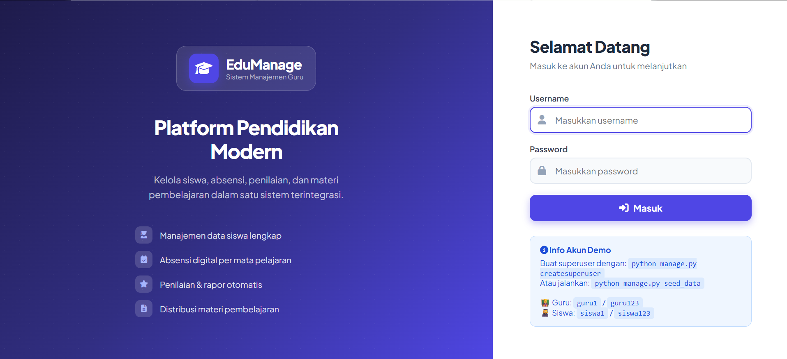
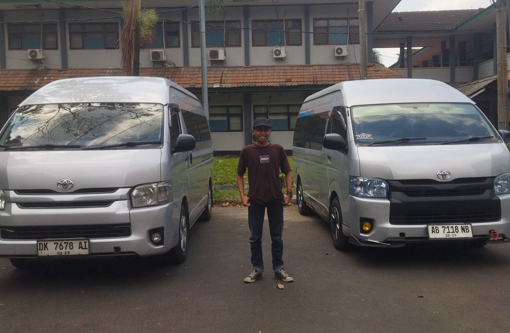
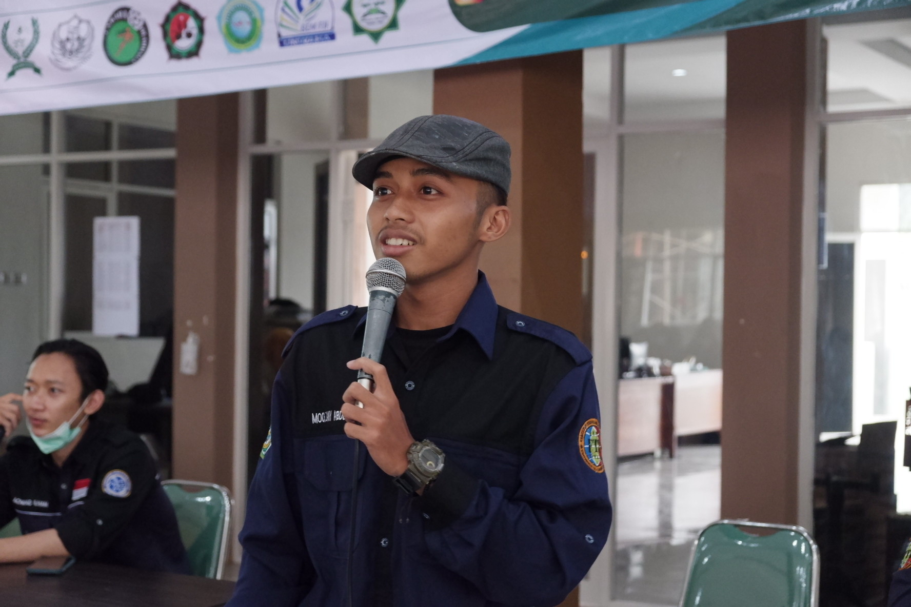

2006-2012
SD Negeri Purwoasri 2
SD Negeri Purwoasri 2 terletak di desa Purwoasri Kecamatan Purwoasri Kabupaten Kediri.
"Profesional dalam kerja, mandiri dalam sikap, berkarakter dalam tindakan."
Berpengalaman sebagai pendidik yang membimbing siswa dengan pendekatan komunikatif, sekaligus menjalankan usaha di bidang Transportasi/Carter dan Jasa Website. Didukung kemampuan Robotik (Arduino), Marketing, Public Speaking, Kepemimpinan, Komunikasi Interpersonal, serta Kemampuan Analisis dan penyelesaian masalah.

Saya adalah Lulusan S1 Informatika yang kini mengabdikan diri sebagai pendidik sekaligus menjalankan beberapa usaha mandiri. Dengan pengalaman kepemimpinan yang kuat di organisasi kampus, saya terbiasa mengelola tim, membangun relasi, dan mengambil keputusan dengan cepat. Berkomitmen memberikan pendidikan yang bermutu bagi siswa, sekaligus terus mengembangkan usaha di bidang transportasi dan jasa teknologi.
SD Negeri Purwoasri 2 terletak di desa Purwoasri Kecamatan Purwoasri Kabupaten Kediri.
MTs Al - Hikmah merupakan pendidikan dibawah yayasan pondok pesantren Al - Hikmah Purwoasri Kediri.
MA Negeri 4 Jombang merupakan perubahan nama dari MA Negeri Denanyar yang berada dibawah yayasan Pondok Pesantren Mamba'ul Ma'arif Denanyar Jombang.
Prodi Informatika.
Menjabat sebagai Ketua.
Menjabat sebagai Wakil Ketua 2 bidang Hubungan Alumni dan Luar.
Menjabat sebagai Majelis Pembina Rayon.
Menjabat sebagai Ketua.
Menjalankan usaha jasa travel dan carter untuk kegiatan studi banding, wisata, dan keperluan lainnya.
Mengajar dan membimbing siswa dengan pendekatan komunikatif serta pemanfaatan teknologi dalam pembelajaran.
Menyediakan jasa desain dan pengembangan website portofolio, undangan online, hingga profil usaha.

Memodifikasi mobil mainan dengan control hp android menggunakan arduino.

Website Management Sistem Untuk Mempermudah pekerjaan guru.

Job carter Kegiatan Study banding mahasiswa UIN Sayyid Ali Rahmatullah Tulungagung ke Universitas Negeri Jember.

Pendampingan lomba dalam kegiatan Indonesia International IoT Olympiad di Bali

Pengarahan dan pembekalan kepada mahasiswa baru dalam kegiatan pra PKKMB tahun ajaran 2021-2022.

Kegiatan Belajar Mengajar di dalam kelas.